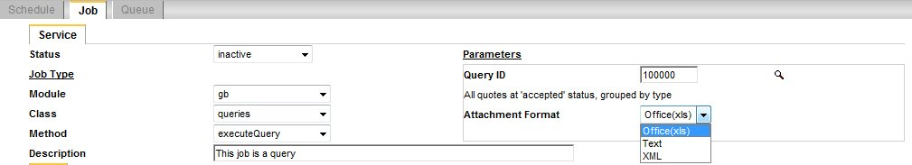
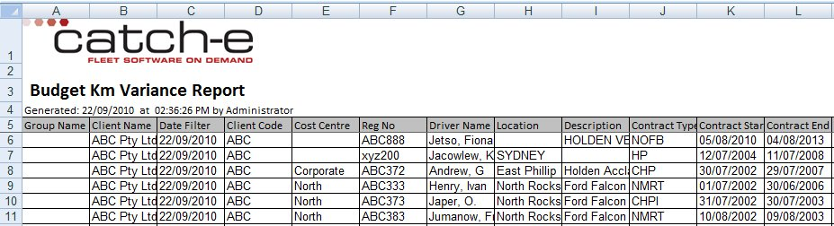

Office(xls) Format
From Help wiki
Main Page → System / Scheduler → Schedule | Job | Queue → Method | Message →  Scheduler Setup → User Defined Queries | Derived Fields | Encrypted Fields | Office(xls) Format | Office(xlsx) Format
Scheduler Setup → User Defined Queries | Derived Fields | Encrypted Fields | Office(xls) Format | Office(xlsx) Format
Contents |
Overview
You can use the xls format functions described below to change the presentation and calculations used in 'Office(xls)' and Office(xlsx) files.
All files are initially formatted using the standard settings. The standard settings are stored in the control [gb_control]xls_controls.
You can update these settings with your own preferred formats.
You can customise files created from scheduler jobs and screen reports by adding xls format functions described below to the specific query or report query.
A useful customisation is to embed formulae into your data rows to extend your reporting capabilities. E.g. Financial calculations
Standard Settings
The standard settings usually include the following
- a header section with your company logo
- a report heading
- run time information
- formatted column headings and data rows.
Output Change
If an Office(xlsx) or Office(xls) report is generated from one of the locations below, and contain more than 65,500 individual rows, then it will be automatically converted to Text(CSV) format.
- Fleet / Administration / Reports
- Reporting / Standard Reports or
- Scheduler / Job executeQuery
Creating an Excel Spreadsheet
To create an Excel spreadsheet using the Catch-e Scheduler, in the Parameters section of the screen, use the 'Attachment Format' dropdown to select 'Office(xls)'.

Scheduler / Job screen
Embedded Formulae
You can embed formulae in the spreadsheet using special markup in your SQL.
For example, the following SQL contains a formula that multiplies the value in column A with the value in column B:
SELECT finance_pmt_regular AS 'Payment', term AS 'Term', '[formula]=A#row_no# * B#row_no#' AS 'Total Payments' FROM fm_contracts AS t1 WHERE contract_id = '100001'
Notice the use of the marker [formula]= , this tells the processor that the code following the equals sign is an Excel formula.
The placeholder #row_no# is replaced with the current row number transforming,
[formula]=A#row_no# * B#row_no#
to
= A6 * B6
Here is the resulting spreadsheet:
_Format_4.jpg.html) >
>
Sample spreadsheet including resolved formula
It would be possible for you to include values from 'fixed' cells using absoluted cell references. These cells would have to be in the header section of the report.
Default Spreadsheet Formats
Unless you specify otherwise, the Excel spreadsheet you create will be formatted according to the default settings for your company, which are set in gb_controls.
A report with sample default settings is shown here:
Sample Company Default Spreadsheet Format
- A Company logo
- A report title (this is sourced from the field [gb_queries]name )
- Report generation details : Date, Time, Who ran report
- A row containing the 'report title', and also the row containing 'Generated by' details, have had their cells 'merged'
- Column headings with grey background
- A thin black border around the column heading and data row cells
- Gridlines turned off
- First 5 rows 'frozen' so that the column headings will not scroll out of view
- Column widths set wide enough so dates don't appear as hashes
- All Cells will be unlocked (editable)
This will produce an Excel spreadsheet like this:

Sample Excel spreadsheet formatted using company defaults
Customised Spreadsheet Formats
For any individual Excel report run from the Catch-e Scheduler, you can override your default company Excel report format.
You do this by specifying the format in a special comment block within the sql. The special comment block can be stored anywhere in the sql (at the top, in the middle, at the bottom - anywhere!).
Here is a sample to demonstrate customised formatting options:
Sample Customised Spreadsheet Format
- No header. That is no logo or report header.
- Column Heading 'Client Name' has had several styles applied:
- 'Text Color' is 'White', 'Fill Color' is 'Blue', 'Font Family' is 'Courier New', 'Font Size' is 15.
- Also the heading is split over 2 lines.
- Each data cell 'Client Name' has these styles applied:
- 'Text Color' is 'Green', 'Font Family' is 'Arial', 'Font Size' is 8, 'Font Style' is 'Bold' and 'Italic'.
- Column headings with grey background
- Gridlines turned on
- Only the first row is 'frozen' so that the column headings will not scroll out of view.
Given the default settings in 'Default Spreadsheet Formats', and then applying the customised formatting options, the result is :
_Format_3.jpg.html)
Sample Excel spreadsheet using customised formatting
Here is an example of the special comment block containing the custom formats:
Sample comment block containing custom formats
/*
--xls_controls--
// Worksheet settings
$xls_controls['worksheet']['gridlines_flag'] = 'yes';
$xls_controls['worksheet']['freeze_panes'] = 1;
$xls_controls['worksheet']['include_header_flag'] = 'no';
// Column Headings
$xls_controls['column_heading']['formats']['client_name'] = array('text' => 'Client|Name', 'text_color' => 'white', 'fill_color' => 'blue',
'font_family' => 'Courier New', 'font_size' => 15, 'align' => '');
// Report Rows
$xls_controls['row']['formats']['client_name'] = array('text_color' => 'green', 'fill_color' => 'white', 'font_style' => 'BI', 'column_width' => 40,
'font_family' => 'Arial', 'font_size' => 8, 'align' => '');
--xls_controls--
*/
The custom Excel formatting settings must conform to the following rules.
- The entire set of rules must be enclosed in a 'comment block'
- starting with : /*
- and ending with : */
- The Excel spreadsheet formatting controls must
- start with : --xls_controls--
- and end with : --xls_controls--
- Blank lines are permitted for readability.
- Comments, which are indicated by double forward slashes, are ignored when the formatting rules are being processed.
- // This is a comment preceded by double forward slashes.
- // This is a comment preceded by double forward slashes.
- Each rule commences with the string : $xls_controls
- Each rule applies to one of:
- The entire worksheet : $xls_controls['worksheet']
- A report header : $xls_controls['header']
- Column headings : $xls_controls['column_heading']
- Report data ('rows') : $xls_controls['rows']
- Worksheet rules are formatted : rule = value
- Thus: $xls_controls['worksheet']['gridlines_flag'] = 'yes'; tells the processor to produce the spreadsheet with grid lines.
- Thus: $xls_controls['worksheet']['gridlines_flag'] = 'yes'; tells the processor to produce the spreadsheet with grid lines.
- Data values from your report can be placed in Header rows, or Column heading rows, by using place-holders. Place-holders are enclosed between '#' signs. For example: #client_name#. Place-holders are replaced when the spreadsheet is produced.
- You can also use any of these specific place-holders: #report_title# #run_date# #run_time# #run_user#
- To set a date or currency format for given column(s), add a 'format' e.g.
- 'format' => '[$$-C09]#,##0.00;[RED]-[$$-C09]#,##0.00'
- 'format' => 'DD-MM-YYYY'
- $xls_controls['row']['formats']['list_price_net'] = array('data_type' => 'number', 'format' => '[$$-C09]#,##0.00;[RED]-[$$-C09]#,##0.00', 'column_width' => 20);
- $xls_controls['row']['formats']['quote_date'] = array('data_type' => 'date_mysql', 'format' => 'DD-MM-YYYY', 'column_width' => 20);
- Note: Although you don't have to set the 'data_type' property, it is a good idea to do this when dealing with numeric / date columns.The 'data_type' describes the input data. Values for 'data_type' can be: number, text, date or date_mysql
- 'Column Heading' formats and 'Row Formats' are applied to individual columns using format => value pairs enclosed in brackets.
- Thus:
- $xls_controls['row']['formats']['client_name'] = array('text_color' => 'green', 'fill_color' => 'white', 'font_style' => 'BI', 'column_width' => 40, 'font_family' => 'Arial', 'font_size' => 8, 'align' => 'C');
- is interpreted by the processor as :
- Thus:
| Rule | Effect |
|---|---|
| $xls_controls['row']['formats'] | All rows of data will be affected by these format rules |
| ['client_name'] | Column 'client_name' will be affected by these rules |
| 'text_color' => 'green' | Font Colour will be green. |
| 'fill_color' => 'white' | Background Colour will be white |
| 'font_style' => 'BI' | The Font will be both Bold and Italic |
| 'column_width' => 40 | Use this rule to affect the default width of cells. The default Excel column width will typically not display an entire name or description. A little trial and error should produce your required result. For those technically interested, click here. |
| 'font_family' => 'Arial' | Font will be Arial |
| 'font_size' => 8 | Font Size will be 8 points |
| 'align' => 'C' | Alignment is Centred |
- You need only specify formats you want to change from the defaults. For example: if you want a different font_size, but are happy with your company's default text colour, you can specify: ['font_size'] => 25, but you do not need to specify the 'text_color' parameter.
- All rules must end with a semi-colon.
| |
Available Formatting Options
The complete list of formatting options available, and the default settings, are listed here.
| Worksheet gb_controls Default Settings (unless amended by your company) | Notes |
|---|---|
| $xls_controls['worksheet']['name'] = ''; | Only one worksheet can be produced. Unless specified, your worksheet will be named by the Excel default 'Sheet1'. |
| $xls_controls['worksheet']['gridlines_flag'] = 'no'; | To display gridlines, set to 'yes'. |
| $xls_controls['worksheet']['freeze_panes'] = 5; | Specify number of rows to be frozen. This is the number of rows which will never disappear from view when you scroll the spreadsheet. Can be set to zero. |
| $xls_controls['worksheet']['include_header_flag'] = 'yes'; | If set to 'no', no header lines or company logo are placed at the top of the spreadsheet. |
| $xls_controls['worksheet']['landscape_flag'] = 'yes'; | For a 'portrait' spreadsheet, set to 'no'. |
| $xls_controls['worksheet']['paper_type'] = 9; | 9 = A4 1 = US letter |
| $xls_controls['worksheet']['protect'] = 'a1B2c3D4'; | Substitute 'a1B2c3D4' with your own password. The sheet can be unlocked later if you know the password.
|
| Header Section gb_controls Default Settings (unless amended by your company) | |
| $xls_controls['header'][1] ... | For the header section, you specify controls for each row. The row number is the next parameter after '$xls_controls['header']' . [1] indicates the first row of the spreadsheet, [2] the second row etc. |
|
$xls_controls['header'][1]['bitmap'] = ... |
Following the row number is either: |
| $xls_controls['header'][1]['bitmap'] = array('filename' => 'logo.bmp', 'height' => 75); | 'filename' is the file to be used as your company logo. It must exist in the relevant directory, and must have a '.bmp' extension. The row height is set so the image occupies exactly one row. The optional 'height' parameter, can be used to change the height of the image. The image width will then be scaled to maintain the same aspect ratio. |
| $xls_controls['header'][3]['value'] = '#report_title#'; | By default, the report title appears in the third row of your speadsheet. If you specify #report_title#, the default report title is derived from the name you give your query (gb_queries.name). |
| $xls_controls['header'][3]['formats'] = array('border_color' => 'black', 'border' => '0', 'row_height' => '14', 'merge_cells' => '0,5', 'font_family' => 'Calibri', 'font_size' => 16, 'align' => 'L', 'text_color' => 'black', 'fill_color' => 'white', 'font_style' => 'B'); |
Cell formats for row [3]. Formats are explained elsewhere in this documentation and are self-explanatory, except for 'merge_cells' => '0,5'. |
| $xls_controls['header'][4]['value'] = 'Generated: #run_date# at #run_time# by #run_user#'; | Default row [4]. |
| $xls_controls['header'][4]['formats'] = array('border_color' => 'black', 'border' => '0', 'merge_cells' => '0,5', 'font_family' => 'Calibri', 'font_size' => 9, 'align' => 'L', 'text_color' => 'black', 'fill_color' => 'white', 'font_style' => ''); | Default row [4] cell formats. |
| Column Heading gb_controls Section Default Settings (unless amended by your company) | |
|
$xls_controls['column_heading']['formats']['font_family']='Calibri'; |
Alternative syntax for the $xls_controls['column_heading']['formats']is shown immediately below. |
| $xls_controls['column_heading']['formats'] = array('font_family' => 'Calibri', 'font_size' => 10, 'text_color' => 'black', 'fill_color' => 'silver', 'align' => 'L', 'font_style' = '', 'border_color' = 'black', 'border' = '1'); | |
| $xls_controls['column_heading']['formats']['client_name'] = (array('text' => 'Client|Name', 'font_family'] => 'Calibri', 'font_size' => 10, 'text_color' => 'black', 'fill_color' => 'silver', 'align' => 'L', 'font_style' = '', 'border_color' = 'black', 'border' = '1'); |
Column Heading formats may also be specified for specific columns. In the example, the column is 'client_name' : $xls_controls['column_heading']['formats']['client_name'] |
| Data Row Section gb_controls Default Settings (unless amended by your company) | |
|
$xls_controls ['row']['formats']['font_family'] = 'Arial'; | Default data row cell formats. |
| $xls_controls[['row']]['formats']['client_name'] => ('font_family' => 'Arial', 'font_size' => 10, 'text_color' => 'black', 'fill_color' => 'white', 'align' => 'L', 'column_width' => 20); | Similarly to Column Heading formats, Data Row formats may also be specified for specific columns. In this example : $xls_controls['row']['formats']['client_name'] |
Data Column Formats
'format' => '$#.#;[Red]($#.#)'
'format' => 'DD-MM-YYYY'
Data Column Formats - Text Wrap
The format below is to wrap text for a column
/*
--xls_controls--
$xls_controls['row']['formats']['Order Status Comment'] = array('column_width' => 40, 'text_wrap' => '1');
--xls_controls--
*/
Library extension
Xls library extends Spreadhseet Excel Writer. All available formatting options from the library can be used.
System Notes
- 5757: Enable extended number formats such as currency. Live 27/08/2012
- 4141: XLS reporting bugs: 1. Customising Header Line. 2. queries.phpo. Live 01/02/2013
- 8614: XLS Controls - Lock spreadsheet. Live xx/10/2013
- (DEV-22122) Increase the colour palette for excel scheduled reports. Live xx/xx/2024

_Format_1.jpg.html){kind=link}
_Format_2.jpg.html){kind=link}